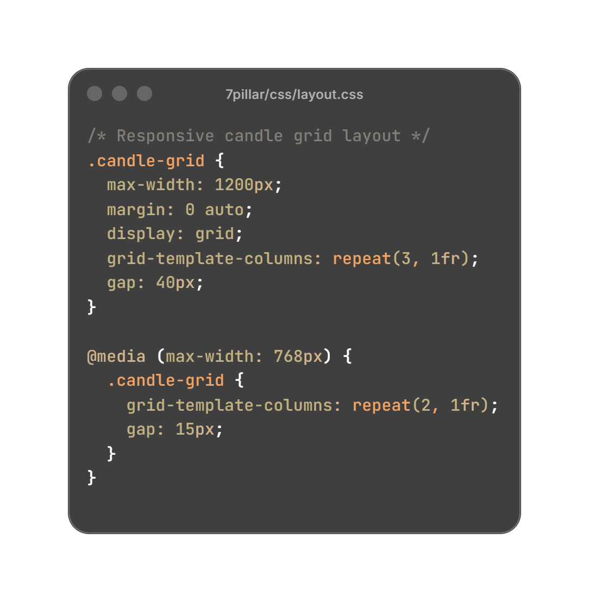
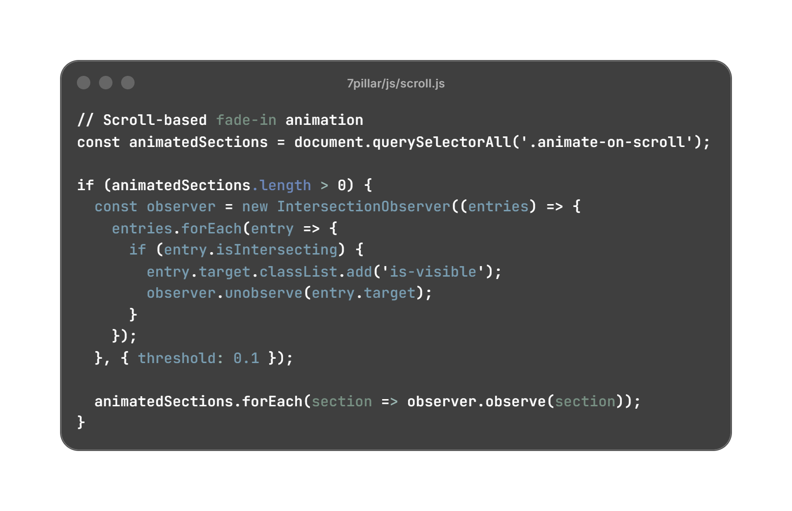

Overview
7 Pillar Candles is an artisanal candle brand seeking an elegant online presence. I designed and built a responsive website that reflects calm luxury through soft colors, serif typography, and warm visual storytelling.
Goal
To design and develop a visually minimal yet engaging website that communicates the brand story through layout, imagery, and tone.
Process
- Discovery & Brand Study: Understood the founder’s creative vision and brand tone.
- UI Design in Figma: Created the full layout, palette, and typography.
- Front-End Development: Built using HTML, CSS, and JavaScript.
- Storytelling: Balanced imagery and whitespace to maintain luxury.
UI Showcase
The visual identity blends calm luxury with handcrafted warmth.
Home page Layout · Product Grid · About Page
Code Highlights
Key parts of the website demonstrating responsive grids + animation logic.
Responsive Grid Layout
Pure CSS Grid for seamless layout adaptation.
Scroll Fade-In Animation
Intersection Observer for smooth scroll fade-ins.
Challenges & Learnings
Designing a sensory, handcrafted brand in a digital space taught me to design with intention — using tone, space, and color to evoke feeling.